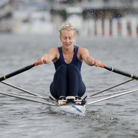
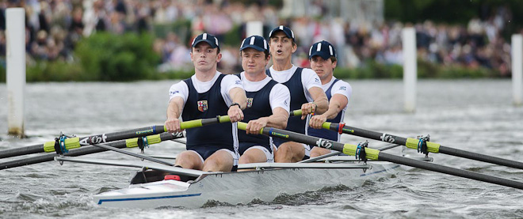
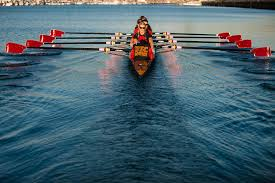
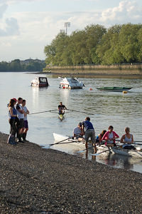

Women's Rowing
LRC has a small, predominantly lightweight, women’s squad that is focussed on developing athletes to perform at the highest level of the sport; principally
trialling for the GB team, aiming to win at Women’s Henley and the National Championships and race at Henley Royal Regatta. Under the guidance of Phil Bourguignon,
LRC senior coach, the group trains in small boats for the majority of the year, mostly single and double sculls, with crew sculling boats formed for the main head
races in the winter season. Off the water, the squad train alongside the men’s squad in the gym and on the erg, completing 10 – 12 sessions a week.

Men's Rowing
The highest performance level for men’s rowing is Henley Royal Regatta and trialing for the Great Britain rowing team for Olympic Games and World Championships.
However, the heart and bulk of the men’s squad at London Rowing Club are not full-time internationals but people trying to enjoy competitive rowing while balancing
their family, work and/or education commitments. They'd love to have you contribute alongside them in their passion for the beautiful sport of rowing. Our coaches
can provide you with whatever you should want to enjoy your rowing; whether it’s a training program, technical advice, a calendar of racing or a fair chance at selection
for the racing crews.

Learn to Row
Learn to Row
London Rowing Club offers "Learn to Row" courses which provide an introduction to our exciting sport. Aimed at those with no previous experience, the courses take
participants through the basics of technique, both on and off the water, as well as navigation and safety. The courses culminate in some fun side-by-side races to
give everyone a taste of racing. Courses last for six weeks, with two sessions per week, each lasting two hours. The courses are headed up by a qualified coach
who are assisted by Club members.

Recreational Rowing & Explore Rowing
There is a strong social aspect to the happy boaters. It is normal to meet up for a drink and a chat after an outing and on the first Wednesday of the month a dinner is held at the Club.
We are also enthusiastic rowing tourists, meet up with other English Clubs and row different bits of river. We also go abroad and in recent time have visited Venice for the Vogalonga, Berlin, Madrid, Paris and Holland.
Those joining us have some previous rowing experience, but we will shortly be running a “Learn to Row” course, which will provide an entrance for those with no rowing experience.